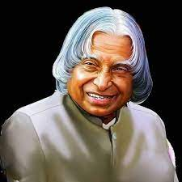

Dr. APJ Abdul kalam was one of the precious gems of India which we all have lost. His demise was not a great loss for the Indians but also for the people across the world. He was a great source of motivation for the youths. His discoveries and works are of great importance for everyone. He played a vital role in the development of India in Defence and research and development. He not only influenced people with his intelligence but also with his optimistic and pleasant behaviour. He will always be having a special place in the hearts of Indians. He is one of the people with zero haters. May his soul rest in peace.